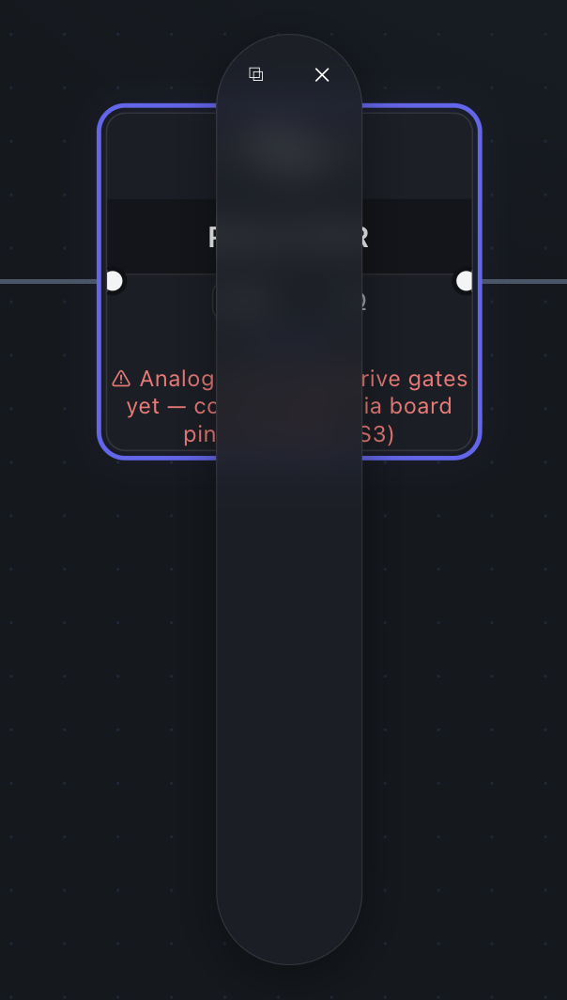

- Zero-Clutter Canvas: Deep navy drafting background with subtle 24px / 120px grid intersections.
- Signal Physics Glow: Cyan (
#00F0FF) for Logic HIGH, Slate (#1A3045) for Logic LOW. - Dockable HUD Inspectors: Replaces vertical clipping modals with crisp, bounded glassmorphic popovers.
- YOLOv8 Vision OCR: Drag and drop hand-drawn sketches to auto-generate schematic wiring.
Vertical Pill Clipping Issue
The current modal popup has unconstrained vertical stretching, zero width bounds, and obscures the active circuit node.

- Modal stretched into an elongated vertical pill with zero readable width.
- Text strings (
Analog ... rive gates yet — co ... S3)) clipped and unreadable. - Obscures the circuit canvas and node handles completely.
Docked Technical HUD Inspector
A bounded, 320px glassmorphic card anchored to the top-right of the viewport with clean diagnostics and waveform probes.
- 320px fixed-width viewport docking with no canvas occlusion.
- Structured diagnostic warnings with one-click resolution actions.
- Live pin voltages and waveform statistics.
Standard 2-input and multi-input Boolean gates with live propagation delay modeling.
Edge-triggered flip-flops, latches, frequency dividers, and variable clock oscillators.
Oscilloscope probes, LED indicators, Seven-Segment displays, and live Truth Table generators.
Cleanse & Replace Broken Popups (`components/InspectorPanel.tsx`)
Replace the unconstrained vertical pill modal with the dockable 320px HUD Inspector. Add clear pinout mappings, voltage level indicators, and structured error callouts.
Implement Blueprint Design System Tokens (`index.css` & `Sidebar.css`)
Apply Deep Navy (#070B12) background, 24px schematic dot grid, glowing cyan signal wires, and CAD monospace typography.
Refactor Logic Nodes (`nodes/GateShell.tsx`)
Render sharp vector glyphs, live pin status indicators, and hover glow effects matching the Conceptual Sketch style.
Verify YOLOv8 Vision Upload & Netlist Exporter
Test end-to-end circuit synthesis from paper sketches and verify Netlist JSON export with 100% test coverage.